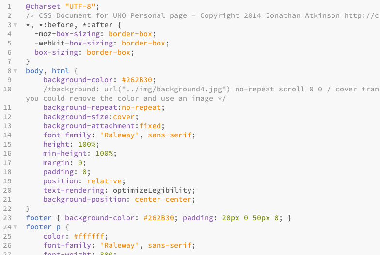
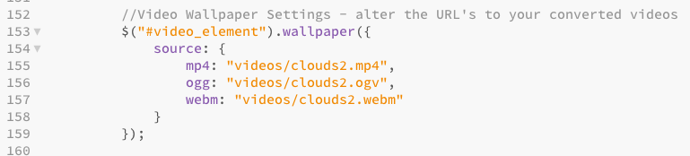
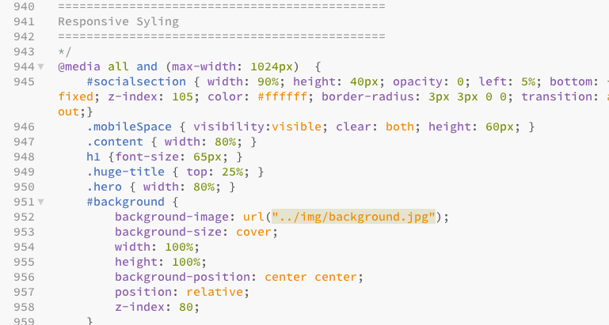
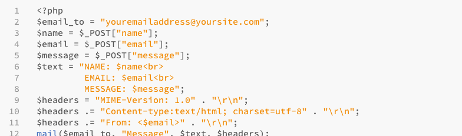
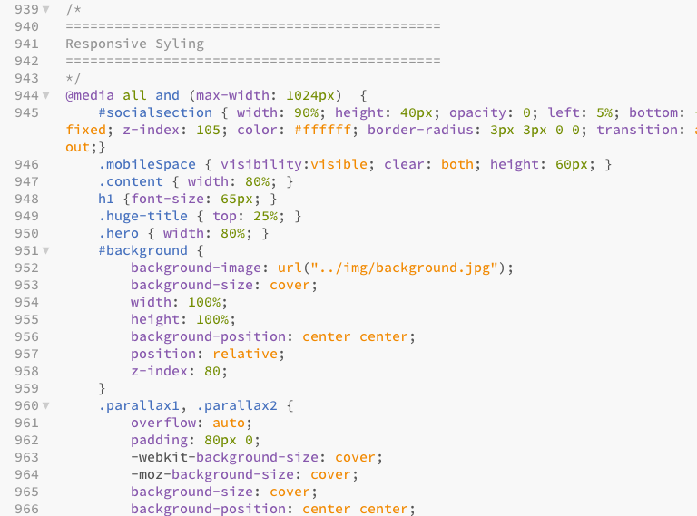
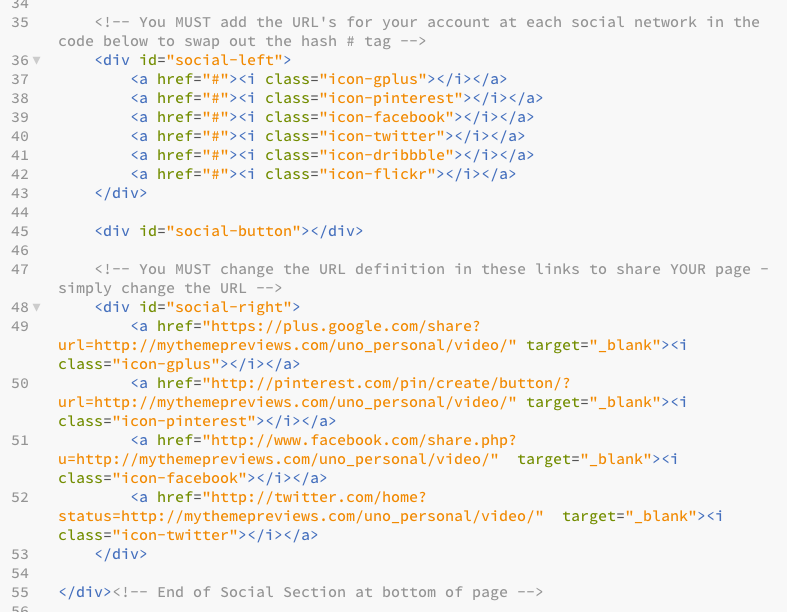

Created: 2/22/14
By: Jonathan Atkinson
Thank you for purchasing my page template. If you have any questions that are beyond the scope of this help file, please feel free to open a support ticket here. Thanks so much!
Welcome to UNO Personal Page - you've made a great choice!
Uno is a responsive, highly configurable, modular constructed HTML5 / CSS3 personal page for displaying your personal, professional, educational and portfolio information. The design and sections contained within, apply the page to many uses quickly and easily. By duplicating, re-ordering or even removing entire sections, or modulars, you can quickly create the perfect layout for your own use. We use retina.js to enable you to deliver higher quality images to devices that can accept them, meaning you are not forcing large downloads to the browser unless they can accept them. We also display the video background version only on laptops and desktops over a certain size also ensuring a great experience for your users. Included in the package is a version that simply uses an image for the background rather than a video - you choice!
Here's a quick breakdown of 9 modular sections you have to play with:
The file is correctly coded HTML 5 / CSS3 - it calls all javascript files and css files where necessary. You should not have to change anything in the way the html file connect to their relevant css and js files as long as you upload everything as provided.
All div's and sections have been labeled to make alterations, copy and paste as easy as possible within the html and CSS files.
If you would like to edit the color, font, or style of any elements, you would edit the main.css file found in the CSS folder:
p {
color: rgba(255, 255, 255, 0.75);
font-family: 'Raleway', sans-serif;
font-weight: 400;
font-size: 21px;
line-height: 1.7em;
}
Included in the download is a single CSS directory / folder for the template - the css files included shouldn't need any alterations unless you wish to customize anything.
The css files should be easy to follow and if using a modern html page editor you should be able to easily see the structure of each css file. Also note that there are several image files contained in the css folder which are for the lightbox plugin and should not be moved unless you wish to alter their location and alter the corresponding code for their new location.

Included in the download is a single JS directory / folder - all necessary JS files are included and most shouldn't need any alterations unless you wish to customize anything. Here is a list of the included JS files:
Please note that alterations to JS files could result in certain features not working - you should not attempt to alter javascript unless you are experienced - please use the web site references next to each JS file listed above for further details and help.
There are no included files with this product as it was designed in the browser and every part of the file is CSS based - therefore alterations to colors etc are done via editing the main.css file. The only images used are placeholder images of which you can simply use to acquire the image sizes if you wish to follow what I did.
Self hosted videos should be available in 3 formats to work correctly in all browsers. You should have MP4, OGV, and WEBM formats available. These should be placed in the 'videos' folder and then referenced in the app.js under the 'Video Wallpaper Settings' - simply alter my URL's to your own. Further details on what options are available can be found at the official website for the plugin here.

The HTML page is created in such a way that once the users viewport is detected below a certain size we stop delivering the videos (for obvious usability reasons) and a single image is used in replacement - this is set in the main.css file for the 'background' class.

If you are using the 'Image Only Background' version of the files then altering the image displayed is super simple. Simply open the app.js and look for the 'Video Wallpaper Settings' and change the source to your new image (or replace the background.jpg and don't touch any code!).
I've used the following font:
The contact form is a standard PHP based form submit that then gets emailed to a specific email address which is set in the mailer.php. YOU MUST CHNAGE THE EMAIL ADDRESS TO YOUR OWN IN THE MAILER.PHP FOR THIS TO WORK!
There should be nothing else required to get the form to work as long as you are on a PHP based server with mail() function turned on - this is pretty standard in 99% of hosting environments - if your server is different, or you do not have mail() function then you should ask your hosting company for a script and how to get it to work etc as this is outside of support and we cannot assist - we offer the script as-is and it works flawlessly.

This landing page has specific media queries at the end of the main.css that are particular sizes for tablets and phones and different orientations. Should you wish to change any CSS for these specific screen sizes you can edit them here (as shown below):

The page comes well equiped for your users to follow you on your social networks, or share your page via their prefered social networks. This is within the special slide up social sharing area at the bottom of the page. You MUST set both your URL links to your account for social follow, and the URL's in the sharing option in the HTML code:

Once again, thank you so much for purchasing this template. As I said at the beginning, I'd be glad to help you if you have any questions relating to this template. No guarantees, but I'll do my best to assist. If you have a more general question relating to the templates on ThemeForest, you might consider visiting the forums and asking your question in the "Item Discussion" section.
Jonathan Atkinson